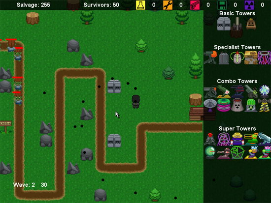
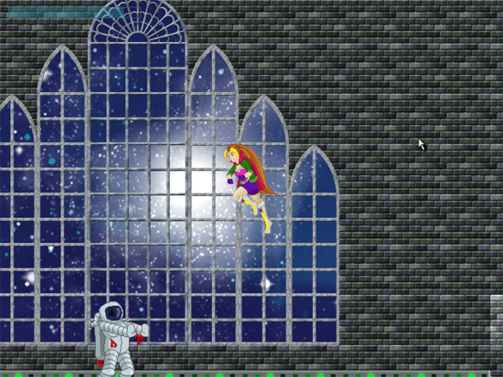

Sphere
Posted by Mathew on December 16th, 2008

3D Puzzle Shooter
Downloads:
Sphere (Windows) - Sphere (OSX)
Links:
Team Sphere:
- Programming
- 3D Art
- Design
- Audio
Platform:
Made using the Unity 3D game engine
Notes:
Made as a final project in TC 455, 3D Game Design, Sphere was the first project where the Unity 3D game engine really clicked for me. Trying to learn from other projects in the class we scoped our project much lower, going for a 3D version of the classic match 3 game play, and adding high score, powerup, and achievement functionality to spice it up. More information can be found in the game's menus.
Posted in Academic, Game
Space Chase Race!
Posted by Mathew on October 9th, 2008

Racing, Chasing, Space Game
Downloads:
Team Hiro:
Platform:
Made using the XNA framework and C#.
Notes:
Completed as a first project in CSE 491, Fundamentals of Game Programming, this project turned out a bit messy to be honest. It was the first game where we really wanted the XBox controller to be the main form of input, and even allows two players to play simultaneously in a split screen mode should the player have two controllers available. Overall I think we did some interesting things in this project, but we simply did not have the time to make it into a polished product.
Posted in Academic, Game
PolyBomber
Posted by Mathew on July 13th, 2008

Three Dimensional Turret Shooter
Downloads:
Team Targaryen:
- Programming
Platform:
Made using HGE for a windows framework, OpenGL for a graphics system.
Notes:
Made for CSE 472, Computer Graphics, as a final project, this isn't so much a game as a test of whether or not we could use a 2d game framework (HGE) to make a 3D OpenGL based project, and in the process learn a little about 3D game programming. Originally we meant to take it a bit further, but time is the currency of student life, and during our later years of college we proved to be slightly more poor than we had at first thought.
Posted in Academic, Game
Haven
Posted by Mathew on May 1st, 2008

Zombie Apocalypse Tower Defense and Shooter
Downloads:
Team Smoke Monster:
- Design
- Programming
- Art:
- Sound
Platform:
Made using Torque Game Builder v1.72
Notes:
This was made as a final project for TC 445, Introduction to Game Design. While we did not take first place, I still felt we put forth a good effort, and our repeat artists Marie Lazar put in an even better performance than our last game (see Galactalvania).
Posted in Academic, Game
Galactalvania
Posted by Mathew on February 28th, 2008

Side Scrolling Action Featuring Space Vampires
Downloads:
Team Arcadia:
- Level Design
- Programming
- Art:
Platform:
Made using Torque Game Builder v1.71
Notes:
This was made as a second project in TC 445, Introduction to Game Design. In this assignment we had to choose either a shooter or a platformer (we chose the later) to make, and we had several weeks to do so. In the end our game ended up being voted best, and I'd have to lay the credit at the feet of our artist, Marie Lazar.